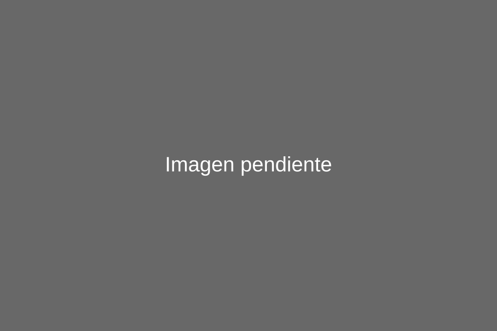
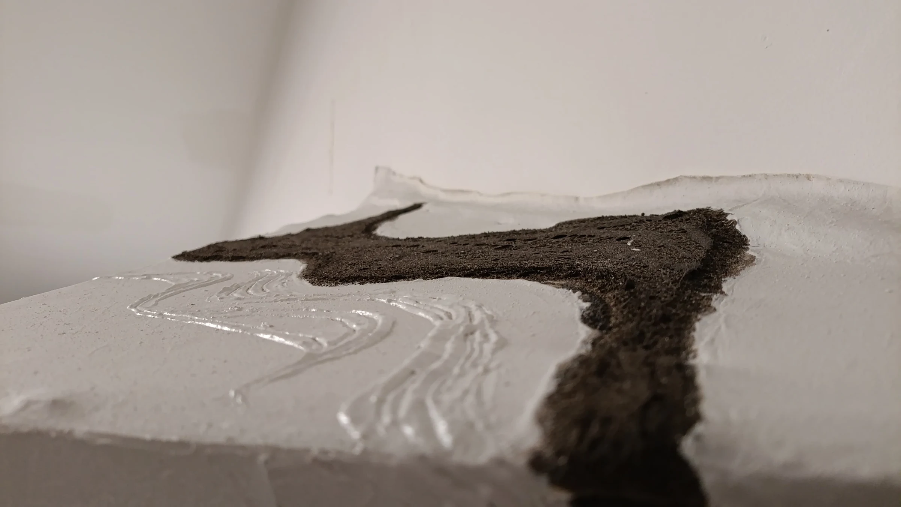
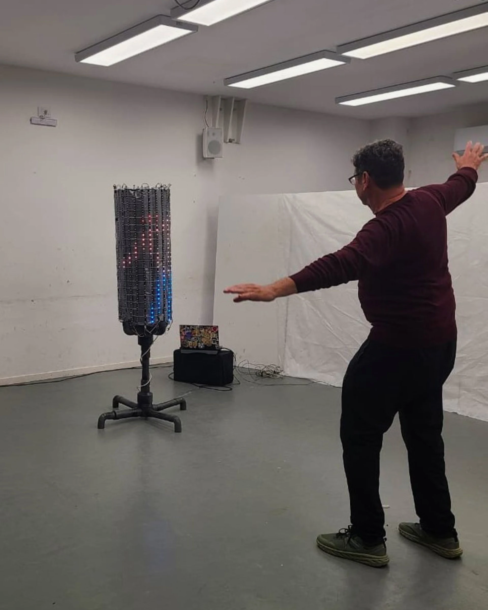
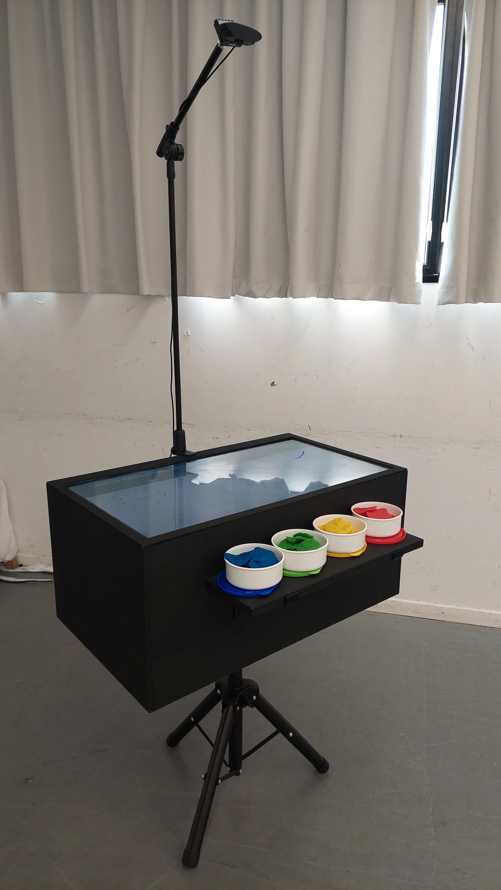
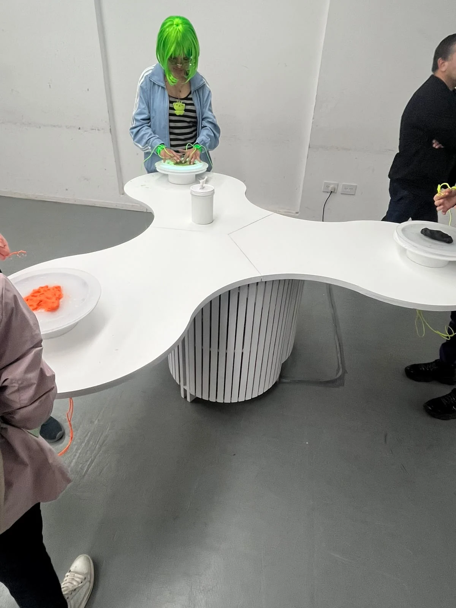
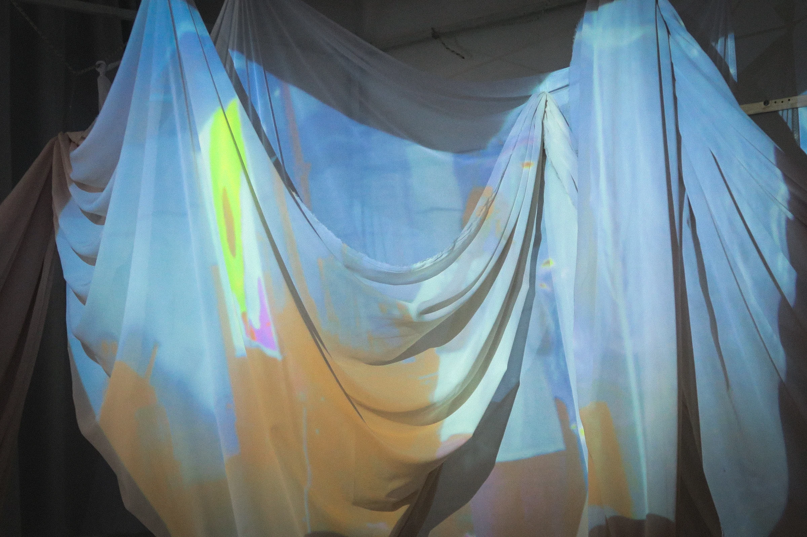
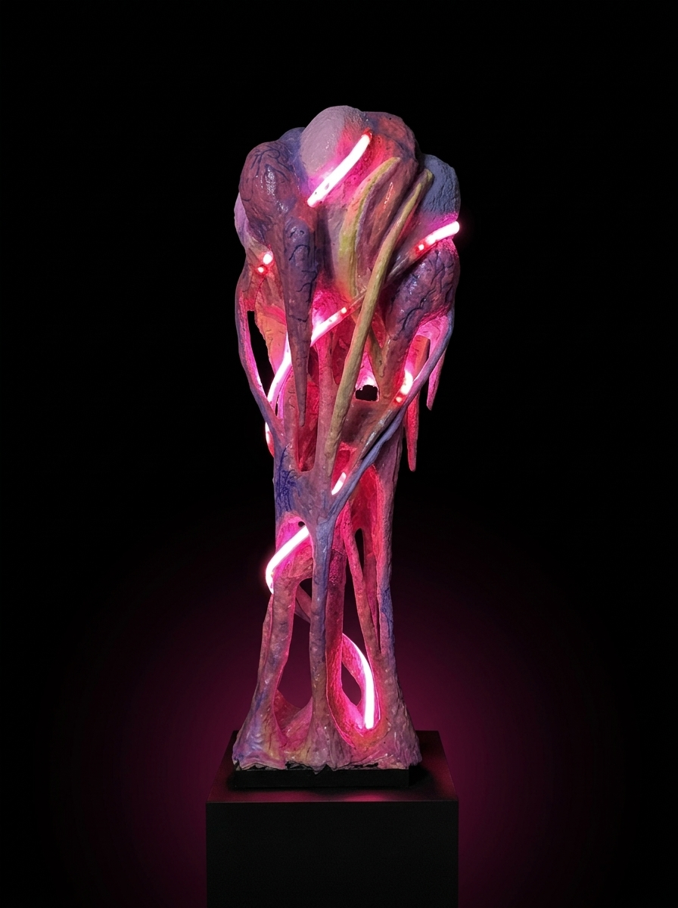
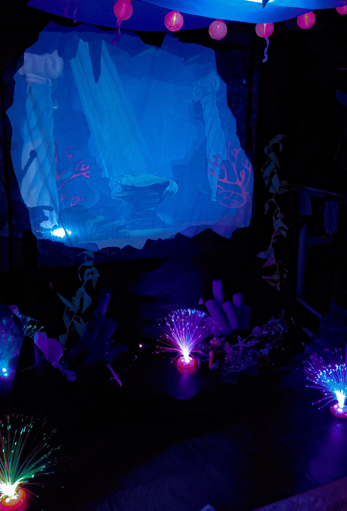
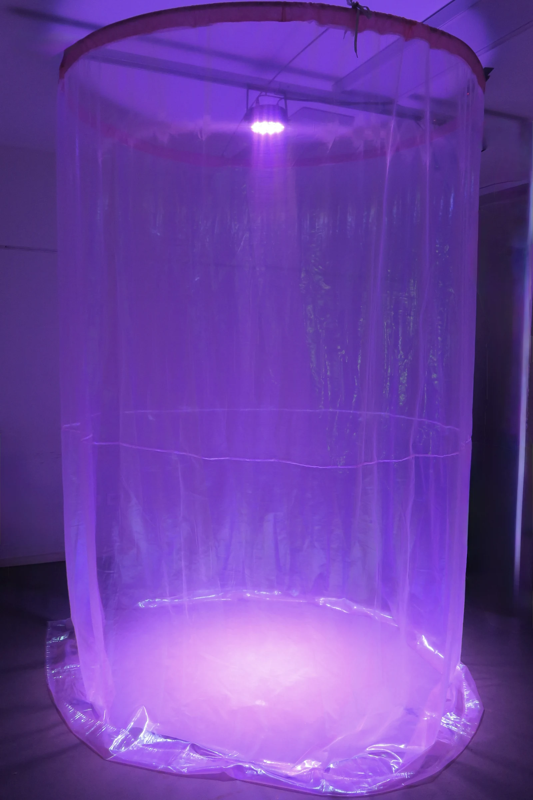

Esta instalación multimedia interactiva propone una aproximación a la experiencia de la ansiedad por sobrepensamiento, explorando cómo los pensamientos persistentes pueden interferir en la percepción y dificultar la recuperación del control.
A través de una cabina de dimensiones reducidas, la obra articula sonido, espacio e interacción para construir una experiencia individual. Una melodía continua convive con interferencias sonoras que se acumulan progresivamente, mientras que la disposición de los controles involucra físicamente al interactuante. La repetición, la saturación y la pérdida progresiva de control constituyen los ejes de una experiencia que busca materializar las dinámicas del sobrepensamiento mediante recursos sensoriales e interactivos.

Háptrikas es una exploración de nuevos modos de interactuar, de materialidades y texturas que permitan potenciar la comunicación háptica. Busca, por medio de una nueva materialidad, la electrónica y el tacto, crear un nuevo tipo de lenguaje sensorial. En esta exploración, las tecnologías buscan apelar a lo primitivo y sensorial volviéndose un nuevo modo de tecnología, que no condice ni con lo moderno ni con lo antiguo, sino que es un híbrido que vive de ese limbo. Así como es indefinible aquello que “habita” la obra, o que quizás sea la obra en sí, es ese limbo, esa hibridación, lo que hace que la obra viva. Propone un nuevo contacto con las tecnologías, con las texturas del entorno que nos rodea, y descubrir nuevas aristas de la posibilidad comunicativa del tacto.
Media-TEX, la máquina que transforma al tatuaje en una experiencia del futuro. Este producto de diseño convierte la espera en un algo instantáneo: un sensor láser detecta tu brazo, mide su altura y regula la presión del marcador. Luego realiza el dibujo de manera eficaz, sistemática y autónoma. Vas a poder ver cómo las luces indican cada estado del proceso para que puedas tener una experiencia tranquila, en confianza y respetuosa. Este dispositivo interactivo propone explorar el cuerpo como soporte, la tecnología como mediadora de confianza y la manera en que atravesamos nuestras experiencias personales.

Frente a una interacción reducida a las manos y a cuerpos cada vez más quietos a la hora de jugar, la obra parte de una pregunta: ¿qué pasa cuando la corporalidad completa reemplaza al mando? Mimetikami es un espejo transformante que propone un gesto amplio, donde hay que moverse, ocupar espacio y jugar con todo el cuerpo. Se compone de una estructura cilíndrica con matriz de píxeles LED, recorrible y a escala humana, que convierte a quienes la rodean en siluetas de luz.
Lo que Mimetikami guarda aparece solo cuando el cuerpo se anima a buscarlo.
Pladi surge a partir de una problemática cotidiana: la información necesaria para viajar en transporte público por La Plata se encuentra repartida entre distintas plataformas, aplicaciones y sitios web. Esto puede dificultar la planificación de los viajes y generar incertidumbre al momento de trasladarse.
Desde el diseño multimedia, la obra propone explorar una nueva forma de transitar la ciudad, reuniendo información en una interfaz web unificada y adaptativa. A través del análisis de plataformas existentes, se identificaron aspectos a mejorar en la organización de la información, la accesibilidad y la experiencia de uso.
Para la exposición, Pladi se materializa en una pantalla táctil incorporada a una parada de micro, acercando la propuesta al espacio cotidiano donde comienza cada viaje.
La obra explora la relación entre vestimenta, memoria e identidad a través de las historias de mujeres inmigrantes. Mediante una instalación interactiva que reúne prendas, fotografías, bordados y relatos, propone descubrir cómo los objetos cotidianos pueden conservar huellas de quienes los habitaron y de los lugares que dejaron atrás. La ropa se convierte en un territorio donde conviven experiencias, afectos y herencias, pero también en una forma de mantener vivas las historias y hacerlas presentes en nuevos contextos. A través de la exploración de estos fragmentos, la obra invita a reflexionar sobre cómo construimos nuestra identidad a partir de aquello que llevamos con nosotras y de las historias que nos atraviesan.
La descripción de esta obra estará disponible próximamente.

Trabajamos y socializamos a través de interfaces; incluso descansamos frente a ellas. Bajo la promesa de productividad y conexión, esos mismos dispositivos alimentan un cansancio silencioso que se acumula en nosotros hasta desdibujar por completo la frontera entre la jornada laboral y el tiempo libre. Byung-Chul Han lo piensa desde el mito de Prometeo: una condena que se repite sin final.
Aquí la repetición recae sobre un teclado, la interfaz que nos conecta con el trabajo. Cada impacto vuelve sobre el mismo lugar y la desgasta ciclo a ciclo. En este sentido, lo que permite seguir produciendo es también lo que se agota.
En un contexto dónde las imágenes y la información circulan cada vez mas rápido, Vértices del aparecer propone una experiencia estética que invita a detenerse para percibir y relacionarse con los demás de otra manera.
Así la experiencia estética se materializa a través de una instalación interactiva que integra imagen, sonido y participación colectiva, poniendo en el centro de la experiencia la presencia de cada persona y su relación con las demás. De esta forma la obra pone en juego la atención, el tiempo y la comunicación entre quienes participan, experimentado las posibilidades de una percepción compartida frente a la inmediatez y la individualización del contexto digital contemporáneo.
En un mundo sumido en la oscuridad, aquellos que debían protegerlo ya no recuerdan su deber. Solo quedan hogares abandonados, ruinas cargadas de historia y secretos, y algo que acecha en las tinieblas.
En esta obra, tu propia mano es quien guía la luz, y tu luz quien guía el camino al faro.
¿Es posible encontrar la meta sin nadie que te ayude en el camino? ¿Podrás recordarle al mundo de lo que perdió antes de que el mundo se olvide de sí mismo?
¿Alguna vez te preguntaste qué hay detrás de lo que Instagram te muestra?
Sugerido nace de explorar cómo el algoritmo de Instagram influye en nuestra identidad a través de lo que vemos, escuchamos y compartimos.
Una obra donde las voces se acumulan, se mezclan y se transforman, hasta que sus diferencias comienzan a desdibujarse y se vuelven parte de algo común.
Así como el algoritmo aprende de nuestras elecciones y nos muestra más de lo que nos interesa, ¿hasta qué punto elegimos lo que consumimos? ¿Cuánto de lo que creemos propio está influido por lo que las plataformas nos muestran?

Maleable es un dispositivo interactivo que pone en diálogo un material moldeable (plastilina) con un entorno digital. Con las manos, quienes participan colocan las masas sobre la mesa, agrupándolas o dándoles forma. Una cámara cenital reconoce sus colores y activa respuestas visuales. Cada color remite a una categoría. Según la cantidad y las interacciones, el sistema plantea preguntas reflexivas.
La obra nace de una inquietud que la atraviesa y que surge de mi práctica docente: la enseñanza del pensamiento computacional en infancias bonaerenses de cinco y seis años, en diálogo con la etapa preoperatoria descrita por Jean Piaget. Pensada para el aula, invita a las/os docentes a explorar la relación entre el pensamiento computacional y el desarrollo cognitivo de las infancias.
Esta obra es una instalación interactiva que explora la creación colectiva a través de la participación de varias personas. Mediante el seguimiento de las manos, cada participante interviene en una composición visual compartida, aportando diferentes elementos que modifican lo que sucede en pantalla. La obra propone una dinámica en la que nadie crea de manera aislada, sino que cada acción se relaciona con las de los demás, dando lugar a un resultado común. A través de la interacción, se busca explorar cómo las decisiones individuales pueden combinarse para construir algo entre todos, generando una experiencia colaborativa en la que el proceso, el encuentro y la participación son parte fundamental de la creación.

¿Somos nosotros quienes decidimos cómo manipular un material o se trata, más bien, de una negociación, de un diálogo entre el material y nosotros?
Triedro material: Sonoro propone un espacio de interacción y experimentación con masas, slime y arena, donde el cuerpo y la materia entran en relación. A través del juego con los materiales, las propiedades intervienen en cada encuentro, generando respuestas sonoras que son el reflejo de la interacción. La obra busca explorar la agencia de la materia y amplificar sus respuestas a través del sonido, haciendo perceptible un diálogo en el que no todo está determinado por la intención del usuario.
La instalación propone vivir y conectar la música electrónica con todo el cuerpo. Al acercarte a las esculturas, el espacio empieza a despertar: las proyecciones reaccionan a tu presencia y cambian según cómo te movés.
No hay reglas ni pasos que seguir; la idea es simplemente conectar a través del baile y dejarse llevar. A medida que entra el ritmo, las figuras cobran vida y se llenan de luz, color y sonido, armando un clima inmersivo donde vos sos quien transforma la obra. Es una invitación abierta a jugar, sentir la música y ver cómo tu propia energía le da forma al espacio.

Fragmentos es una instalación interactiva que indaga la despersonificación del sujeto en las prácticas postfotográficas de Instagram. A partir de la exposición continua, la alteración de la imagen y su carácter efímero, la obra propone interrumpir el adormecimiento que produce el flujo incesante de imágenes propio de la sociedad del espectáculo.
Sobre telas suspendidas se proyecta en tiempo real la captura del sujeto participante, quien puede intervenir la imagen al manipular piezas sobre una mesa. El gesto corporal y consciente restituye el cuerpo frente a la inmaterialidad de lo virtual y a la subjetividad alterdirigida.
El Estado de Flujo opera como el equivalente contemporáneo del Aura en los Sistemas Estético-Lúdicos (comúnmente denominados "jueguitos"), donde la belleza reside en la estructura de reglas.
La propuesta se materializa en una instalación asimétrica dividida en dos estaciones: la Estación Jugador, donde interactuantes cooperan en Rosty Zone usando joysticks y TV retro, y la Estación Control, una cabina técnica donde un interactuante actúa como "algoritmo humano" modulando la dificultad con hardware no convencional.

¿Cuándo podríamos decir que hemos conocido algo por completo? Quizás nunca. Sin embargo, algo parece haberse acelerado: la transición, el movimiento, la impermanencia.
Todo parece estar cada vez más al alcance de la mano, a la vez que lentamente escapa de ella. Fragmentado y disperso entre aquello que aparece y se esfuma. Siempre hay algo detrás y algo va a ocupar su lugar.
Hábitos y costumbres a los que somos frágiles toman la forma de elecciones y se disfrazan disuadiendo al deseo.
La obra es una instalación interactiva de luz que invita a explorar cómo nuestras acciones pueden influir en la experiencia de otras personas. Está compuesta por 16 baldosas de piso que, mediante sensores de presión y aros LED, responden a los movimientos y las presencias, generando distintos comportamientos lumínicos. La instalación propone un espacio de exploración compartida, donde la observación, la experimentación y la interacción con otros forman parte de la experiencia. A través de diferentes estados lumínicos, la obra transforma un gesto cotidiano como caminar en una oportunidad para descubrir nuevas relaciones entre el cuerpo, el espacio y los demás.
La mirada que me define es una instalación interactiva que explora la relación entre identidad, percepción y estereotipos. Un trono rodeado por una estructura de formas orgánicas se convierte en el punto de encuentro entre el cuerpo y una mirada que observa. A través de proyecciones, luces y sonidos, decenas de ojos reaccionan ante quien se sienta, construyendo una experiencia donde sentirse observado se vuelve parte de la obra. La instalación propone reflexionar sobre cómo las miradas externas pueden influir en la forma en que percibimos y clasificamos a los demás, y cómo esas mismas categorías pueden terminar formando parte de nuestra propia identidad.

Durante nuestra vida, los seres humanos sufrimos repetidos fracasos y frustraciones al querer lograr un objetivo, dependiendo de distintos factores, como la suerte o las oportunidades que se presentan. Cada uno es consciente de que el progreso generalmente no es lineal, sino que presenta altibajos y retrocesos.
Tocando Fondo se trata de una obra interactiva que mezcla la instalación con el videojuego e involucra el cuerpo, la movilidad y habilidad, por lo que la experiencia de cada jugador es única, al igual que su forma de lidiar con la frustración de los retrocesos y dificultades. La búsqueda estética propone pensar más allá del fin o del objetivo, ya que el recorrido puede ser mucho más memorable que el destino.
¿Es posible jugar sin recurrir a estímulos visuales?
SINCRONIA es una obra interactiva que explora la relación entre el sonido, el ritmo y la atención, indagando en la posibilidad de alcanzar un estado de concentración profunda a través de la escucha.
Materializada en un arcade físico, la obra propone una experiencia de juego en la que el sonido guía la interacción. A través de patrones rítmicos y la incorporación progresiva de distintos instrumentos, el participante debe reconocer, anticipar y sincronizar sus acciones con lo que escucha.
La propuesta desplaza la mirada como principal guía de la experiencia y sitúa la escucha en el centro, invitando a explorar otras formas de percepción e interacción.
¿Qué sucede con la creatividad cuando creamos junto a una inteligencia artificial? Esta obra nace de la exploración de cómo las decisiones de las personas y las respuestas de una IA participan de un mismo proceso creativo. Un intercambio donde la voz es el punto de partida y cada respuesta puede modificar lo que hacemos después. La composición toma forma entre lo que proponemos, lo que esperamos y aquello que nos sorprende.
Si crear también implica escuchar, interpretar y elegir, ¿cómo se construye una creación compartida con una inteligencia artificial? ¿Cuánto del resultado depende de nuestras decisiones y cuánto surge de un intercambio que no podemos anticipar por completo?
La obra propone una reflexión sobre la construcción de la imagen del influencer y la transformación de la vida privada en un producto de consumo. A través de una pared cubierta de post-its, se presenta una superficie que oculta aquello que existe detrás de la imagen pública. El público es invitado a retirar los papeles, descubriendo progresivamente una nueva imagen y los mensajes que permanecían ocultos. Esta acción participativa busca poner en tensión la apariencia de espontaneidad y autenticidad de las redes sociales con su carácter escenificado y comercial. La obra invita a cuestionar qué mostramos, qué ocultamos y cómo la mirada del otro participa en la construcción de aquello que consumimos.
Tu mente puede hacer más de lo que imaginás. A través de la concentración, esta experiencia te invita a descubrir tu capacidad de influir sobre lo que sucede y a poner a prueba tu propia voluntad. Lo que al principio parece estar bajo tu control empieza a desafiarte, mientras distintos estímulos compiten por tu atención. La obra traslada al espacio físico algunos de los mecanismos que operan silenciosamente en las interfaces digitales: la recompensa, la interrupción y la búsqueda constante de nuevos estímulos. Una experiencia que pone en juego nuestra capacidad de concentrarnos y cuestiona cómo el diseño puede influir en aquello a lo que prestamos atención.
Una instalación interactiva que invita a explorar el cine argentino desde una experiencia física y audiovisual. La obra recrea la apariencia de un proyector cinematográfico analógico, acompañado por seis rollos que representan los géneros humor, misterio, drama, terror, romance y documental. Al combinar dos rollos, se establece una nueva relación entre géneros y cambia el contenido proyectado. Una interfaz inicial inspirada en Twitter introduce el universo digital que atraviesa la investigación. La propuesta vincula cine, participación y resignificación, convirtiendo la selección de contenidos en una experiencia donde cada decisión abre una posibilidad diferente.
De los creadores de "audioversionfinalfinal.wav" y "ultimoaudio2.wav", presento "tesis.wav", una instalación sonora inmersiva que te detiene un momento para pensar ¿En dónde estoy? ¿Qué suena alrededor? Y sólo podés guiarte con el sonido! Frente a la normalización de la contaminación sonora y la elusión del ambiente sonoro, sea por la misma contaminación o aislamiento por tecnología, "tesis.wav" te invita a escuchar, ubicarte en un lugar y transformarlo con tu cuerpo.
Esta es una época de escucha reducida, donde ignoramos los ambientes naturales alrededor, y nos acostumbramos a los ambientes artificiales de las tecnologías y las redes. Por eso, debemos diferenciar entre oír pasivamente, y escuchar activamente prestando atención. Esta instalación nos despoja del uso del sentido visual para orientarnos y nos obliga a escuchar activamente nuestro alrededor para entender dónde estamos y en qué transformamos la obra mientras exploramos el espacio sonoro propuesto.
Super Slime Factory es una instalación interactiva corporal y cooperativa para dos personas, desarrollada como parte de una tesis de Diseño Multimedial de la UNLP. Los participantes controlan robots dentro de una fábrica de slime y resuelven desafíos mediante movimientos coordinados.
La obra se materializa mediante una cámara que captura los movimientos corporales y los traduce en tiempo real a un entorno digital proyectado, sin necesidad de controles físicos.
La propuesta explora la interacción corporal, la copresencia y la interdependencia, investigando cómo las mecánicas cooperativas favorecen la comunicación y la construcción de experiencias compartidas.

Galaxia
Una instalación multimedial interactiva que invita a construir una galaxia a través del tacto, la luz y el sonido. En un espacio a oscuras, las personas pueden explorar, colocar y reorganizar estrellas de papel sobre tensores suspendidos. Al conectarse, cada estrella se ilumina y suma una capa sonora al ambiente, transformando la composición con cada nueva intervención. La obra propone una experiencia que puede recorrerse y disfrutarse desde distintas formas de percepción, considerando especialmente a las personas ciegas. La accesibilidad forma parte del proceso de creación y de las posibilidades de interacción. A través de la exploración y la participación, cada persona contribuye a componer un espacio sensible en constante transformación.
#Galaxia #luz #universo #sonido #accesibilidad #diseñoUniversal
Materiales: Biobasados y metal.
Instalación que encarna a un ser vivo en transformación y degradación, invitándonos a establecer un intercambio sensible a través del contacto. Ella es la síntesis de la búsqueda de crear materialidades biobasadas en comunión con el planeta y nos propone sentirnos en conexión como parte de un todo.
Aquí germina una sinergia fruto del diseño, investigación y desarrollo transdisciplinar que da lugar a un intercambio de saberes con la intención de potenciar nuestra agencia y el poder de la imaginación frente a los discursos individualistas y desfuturizantes.
Gracias a la Universidad Nacional de La Plata, la Facultad de Artes y el Laboratorio de Investigaciones de Metalurgia Física (LIMF) de la Facultad de Ingeniería por brindar espacio a esta sinergia.
SERAPH.EXE explora la relación entre tecnología, fe y sacralización en la contemporaneidad. A través de una instalación que combina estructuras orgánicas, cables, pantallas y dispositivos electrónicos, emerge una entidad angelical que actúa como mediadora entre lo humano y un sistema inaccesible. La obra indaga en cómo las tecnologías que creamos pueden adquirir una autoridad que trasciende su función original, convirtiéndose en objetos de fascinación, confianza y culto. En este vínculo, la máquina deja de ser una herramienta neutral para ocupar un lugar próximo a lo divino.
¿Qué sucede cuando los seres humanos atribuyen un poder superior a sus propias creaciones? ¿Quién termina venerando a quién?

Nimbo es una obra inmersiva que explora la desmaterialización del cuerpo mediante soportes no convencionales. Materializada con un aro suspendido que despliega una membrana textil, la instalación propone un límite blando y traslúcido. Esta envoltura aísla perceptivamente al usuario, funcionando como un refugio que no lo desconecta del exterior. En su interior, la obra invita a habitar una atmósfera lumínica donde las certezas espaciales se desdibujan. El entorno interactivo cobra vida, mutando sutilmente ante la presencia de cada persona. Mediante esta sinergia entre la corporalidad, el textil y la luz, el espectador pierde la percepción de sus contornos, fundiéndose con la obra para alcanzar un estado de aislamiento sensorial y permeable.